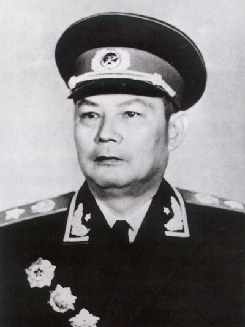

叶剑英
叶剑英（1897—1986），广东梅县人，中华人民共和国元帅，杰出的军事家、外交家和政治家。他长期从事革命和军事工作，在解放战争和新中国建设中发挥了重要作用。
叶剑英以战略眼光和政治智慧著称，善于协调各方力量，推动国家建设和外交事务。他在军事指挥、外交谈判以及党和国家重大决策中都展现了卓越才能。
在家庭生活和个人修养方面，叶剑英强调清廉、正直、勤俭。他注重对子女的教育，培养他们忠诚于国家、勇于担当、诚实守信的品质，同时身体力行以身作则，形成了深厚的红色家风。
叶剑英的革命事迹和家风教育，不仅影响了广东人民，也成为全国红色教育的重要资源。他的精神激励了一代又一代人投身国家建设与民族复兴。
← 返回中国地图